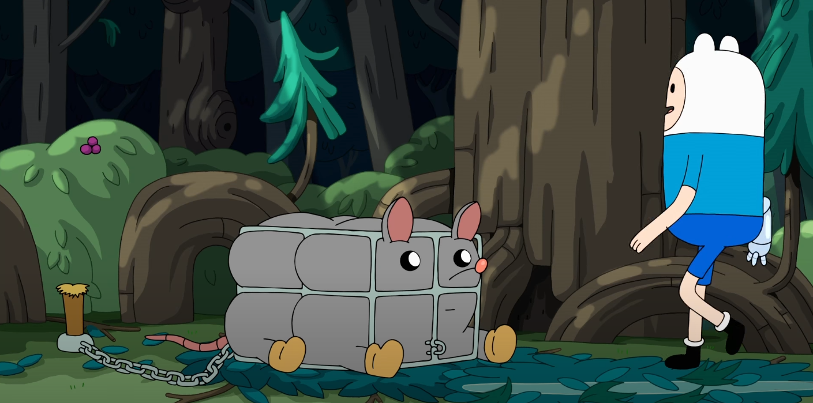

About Cage Rat
Cage Rat is a rat that appears in the Adventure Time: Islands episode, "Mysterious Island". Finn finds the giant rat trapped in a cage and attempts to save it, falling into a trap himself. He becomes angry at the rat because he realizes that it was bait.
Cage Rat's Characteristics
- Shape reminiscent of a rectangular prism
- Barely fits in his cage
- Big yellow boots on each of his feet
- Long reddish pink tail
3D Models

To the left is a wireframe of Cage Rat's model, and to the right is the final render.